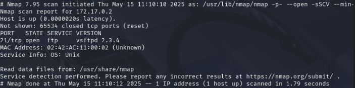
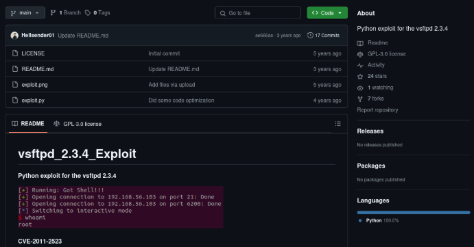
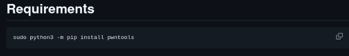
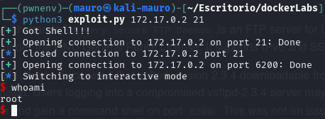

Maquina FirstHacking
En este laboratorio exploraremos una máquina de DockerLabs con una vulnerabilidad en el puerto 21. Aprovecharemos esta falla para introducir un backdoor y obtener acceso privilegiado como root, empleando una herramienta extraída de un repositorio en GitHub.
Empezaremos haciendo un escaneo de puertos a la maquina FirstHacking con la herramienta Nmap
sudo nmap -p- --open -sSCV --min-rate 5000 -Pn -n -v 172.17.0.2 -oN escaneo
| Parte | Significado |
|---|---|
sudo | Se necesita privilegios de administrador para algunos tipos de escaneo (como los de tipo SYN). |
nmap | Herramienta para escaneo de redes y puertos. |
-p- | Escanea todos los puertos (del 1 al 65535). |
--open | Muestra solo los puertos abiertos, omite los cerrados y filtrados. |
-sSCV | Combinación de opciones: • -sS = Escaneo SYN (rápido y sigiloso). • -sC = Usa scripts NSE básicos, equivalente a --script=default. • -sV = Detecta versiones de servicios. |
--min-rate 5000 | Intenta enviar al menos 5000 paquetes por segundo (muy rápido). ⚠️ Puede generar falsos positivos si la red no lo soporta bien. |
-Pn | No hace ping previo al host (asume que está vivo). Útil si ICMP está bloqueado. |
-n | No resuelve nombres DNS (más rápido). |
-v | Modo verborreico: muestra más detalles durante el escaneo. |
172.17.0.2 | IP del objetivo. |
-oN escaneo | Guarda el resultado en un archivo llamado escaneo en formato legible para humanos (normal output). |
El escaneo nos muestra que esta maquina tiene 1 puerto abierto.
- puerto 21 FTP vsftpd 2.3.4

El puerto FTP 21 es el puerto estándar de control y comando para el Protocolo de Transferencia de Archivos (FTP). Se utiliza para establecer la conexión entre un cliente FTP y un servidor FTP. El puerto 20, por otro lado, se utiliza para la transferencia de datos.
El Puerto 21 en detalle:
Función:
El puerto 21 es el puerto de control y comando para FTP, a través del cual el cliente envía comandos al servidor y el servidor responde.
Conexión:
Para conectarse a un servidor FTP, el cliente debe establecer una conexión de control en el puerto 21.
Transferencia de datos:
Después de establecer la conexión de control en el puerto 21, se utiliza el puerto 20 para la transferencia de datos entre el cliente y el servidor.
Dicho esto al tener el puerto 21 una versión 2.3.4 se puede hacer un backdoor. Esta vulnerabilidad es la CVE-2011-2523
Que es un backdoor?
Un backdoor es una forma de obtener acceso oculto o no autorizado a un sistema, saltándose la autenticación o los controles normales. Puede ser:
🛠️ Instalado por un atacante.
👨💻 Dejado intencionalmente por un desarrollador.
🧬 Inyectado mediante una vulnerabilidad.
Descargaremos este repositorio de github donde contiene el exploit para vulnerar el sistema.

Uno de los requerimientos para usar este exploit es instalar pwntools. Pwntools es una librería de Python muy usada para escribir exploits. El problema es que se instala con pip lo cual esto kali linux no deja hacerlo.

Recomiendo crear un entorno virtual con Python para instalar la librería
python3 -m venv ~/venvs/pwnenv
con este comando activas el entorno virtual. Una vez activado puedes empezar a instalar la librería pwntools
source ~/venvs/pwnenv/bin/activate
pip install pwntools
Ya descargado el archivo lo ejecutamos con el siguiente comando:
python3 exploit.py 172.17.0.2 21
| Parte del comando | Explicación |
|---|---|
python3 | Ejecuta el script usando Python 3. |
exploit.py | Es el script que estás ejecutando. Contiene el código del exploit. |
172.17.0.2 | Es la dirección IP de la víctima (una máquina o contenedor con FTP). |
21 | Es el puerto objetivo, en este caso el puerto del servicio FTP. |
Ya ejecutado veremos que somos root en la maquina victima.

PD: para desactivar el entorno virtual de Python usar este comando:
deactivate